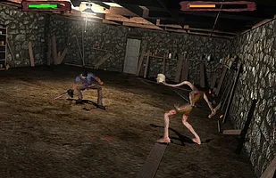
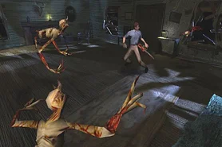

Evil Dead: Hail To The King
The Ultimate Evil Dead Gaming Experience

There is no two ways about it. This is how you make an Evil Dead game.
I don't give a shit about the silly complaints people have about this game. They are minor issues and completely irrelevant. This is, to this day, the only Evil Dead game that truly feels like The Evil Dead and at the end of the day, that is what we want from an Evil Dead game and what is important.
If you cannot capture the Evil Dead vibe, then do not make a game based on it. If it feels like a different game with an Evil Dead skin, then it is not an Evil Dead game.
THIS IS AN EVIL DEAD GAME.
It feels like it. It sounds like it. It TASTES LIKE IT.
This is the best Evil Dead game that exists right now. I don't think it will ever be topped, but if it is, then I will admit it. Until that day comes, EVIL DEAD: HAIL TO THE KING is the best Evil Dead game of all time.
WHAT DEADITES REALLY LOOK LIKE
This is the only Evil Dead game that reveals what the deadite spirits, the Kandarian Demons, really look like.
In the movies (and most other games) they are only displayed as smoke or mist, non-corporeal skulls, or unseen forces that possess people. We never truly see the spirit in its true form.
Hail To The King reveals them in their entirety, and they are both terrifying and awesome. We can also now see that we kind of always knew what they looked like.
At the end of Evil Dead 1, we see the arms and claws of these creatures rip through the possessed bodies during the meltdown sequence after Ash burns the Necronomicon. We also see one briefly fly through the vortex in the intro sequence to Evil Dead II.
But now, thanks to Hail To The King, we get to see them for what they are in full, and even put some boomstick shells in their heads.

Groovy.
LINDA RETURNS
Linda's headless corpse returns also.
When I first encountered this I nearly shat myself. Picking up the shovel by her grave will cause her to raise up from where she was buried 14 years ago.
I actually ran the first time I saw this, so I didn't fight her since this happens right near the beginning of the game.
Turns out running to avoid the horror actually made the horror worse, because when I returned to the cabin at the end of disc one, which you have to do to progress, she popped up from the ground right close to the front door of the cabin.
That's right. She was waiting for me.

What other game would do that? Most games would simply unload an enemy from memory and that would be the end of it.
Nope.
Linda will wait and attack you elsewhere near the cabin if you do not kill her right away when you pick up the shovel.
This game is fucking creepy as shit sometimes.
You can also run from her to the workshed if you want, but she will follow you and be waiting outside when you come back out.
Linda always was a persistent deadite.
ANNIE KNOWBY RETURNS
Speaking of which, the cellar boss is Annie Knowby.
Yeah, her. From Evil Dead II.
Remember at the end of that movie she was stabbed in the back by the Kandarian Dagger by Ash's severed hand? Remember also that she was Henrietta's daughter?
Both of these things are referenced in this boss fight when you first meet her.
She's buried in the cellar (just like her mother was), she still has the dagger lodged in her back (which she pulls out to use as both a stabbing weapon and a projectile firing wand), and she quotes her mother with the classic Evil Dead II line:
"Someone's in my fruit cellar."

And being Henrietta's daughter, as a deadite, she seems to have inherited her mother's stretchy-neck talent.
This boss is also the hardest one in the game. She is strictly a firearms boss. Fighting her with chainsaw and axe is a guaranteed way to get yourself F'd in the A.
Can you see it now? How this game is made with love and respect to the movies that came before?
This game is set after the events of the movies, so they couldn't bring back Henrietta in the same way, but they could expand on the lore and events.
They knew Annie was killed and never heard from again, so being Henrietta's daughter, she is the perfect stand-in for her.
This is not just key-jingling. This is a canonical, logically explainable thing. It makes sense in universe.
And that is just another reason why this game is so perfect.
Don't ask me why Annie has yellow shorts in the PC version though. She has blue on all the other versions, more accurate to how she looked in the movies. It's weird.
AMAZING CALLBACKS TO THE MOVIES
This game features tons of great movie callbacks. The fruit cellar in particular is full of them.
The projector that almost blinds Ash in Evil Dead 1? It's down there, and if you examine it you get that hilarious text on screen that reads:
"There are better ways to go blind."
Brilliant.

The famous music during the end scene of the first movie, when the record player in the cellar turns itself on, is also here.
The same music that later returned during the ending of Ash vs Evil Dead Season 2 can be found playing on a record player in the cellar.
You can even interact with it and switch it off if it is getting on your nerves.

There is a leaky gas pipe blocking the door to the cellar boss that you can repair with a wrench. Doing so causes blood to spray in Ash's face and makes the projector bloody.
A double callback to Evil Dead 1 and Evil Dead II with these two elements coming together.
And there is so much more.
This game is so fucking amazing.
THE DARK ONES
The Dark Ones were a mystery through most of the Evil Dead franchise, but they were first revealed in this game.
Yep.
THIS GAME.
Not Ash vs Evil Dead.
They were shown here first, and the TV series actually kept their appearance true to how they looked in this game for the most part.

They are long-robed, mostly red (although some wear purple), humanoid figures with supernatural powers.
You actually get to fight a number of these near the end of the game.
They are very dangerous if they get too many attacks in, striking Ash with fire and electricity powers.
They float about, hiding their faces inside their robed suits, so we still do not know exactly what they look like.
Their objective is to help Evil Ash open a gateway to the Mirror Dimension and release the Old Ones.
But Evil Ash betrays them and kills them so that he can rule the new world himself.
GAMEPLAY
The game plays like most survival horrors of the era, with a few unique additions.
It has all the usual stuff. A limited inventory, holding a button to run, searching for ammunition, health kits to restore your life bar, and exploring dangerous environments.
The game uses pre-rendered backgrounds, all from fixed camera angles. Many people simply call these Resident Evil clones, but it is not really fair. It is classic survival horror.
The game takes inspiration from the genre while adding its own Evil Dead identity.

Ash, as a character, can carry not one, but two weapons at once.
This is used to create brutal fatalities on deadites.
Ash's right hand is always the chainsaw, but his left hand can hold whichever weapon you choose:
Axe, pistol, shotgun or rifle.
All of these weapons can be upgraded, with the exception of the axe.
Once you have done enough damage to a deadite, you can hook it on your chainsaw (as long as it has enough fuel) and use whatever your left hand has equipped to finish it off.
Ash will even deliver a cocky remark as the deadite dies.
But it also features a taunt button, something that I feel personally is very important for Ash as a character.
Pressing this button will get Ash to spit out a cocky remark or one-liner.
It may seem pointless at first, but this button actually does have a purpose.
Taunting a deadite that either backs away or retreats will piss it off enough for it to come back, allowing you to kill it.
Also, taunting while you have a deadite hooked on your chainsaw for a fatality will cause it to drop better items.
Pretty cool, huh?

This game has a pretty dark, creepy atmosphere, so the taunt button is vital to break the tension a little (but not too much).
And that is exactly what I mean about this being a perfect Evil Dead game.
This is exactly the vibe of the movies that preceded it.
EVIL DEAD: HAIL TO THE KING
Here it is.
The greatest Evil Dead videogame of all time.
Ever.
You might think that's sarcasm. Most people hate this game.
But those people are completely missing what makes Hail To The King special.
Hail To The King is a true love letter to the Evil Dead franchise and shows it the respect that it deserves.
It is true to the movies that preceded it, and it captures the atmosphere and style perfectly.

This is how you translate the Evil Dead into a game the right way.
Don't get me wrong, I love Fistful Of Boomstick, Regeneration and even the Commodore 64 Evil Dead game too, but this one...
THIS ONE RIGHT HERE...
is the perfect Evil Dead experience.
No sarcasm. No jokes. I'm dead serious.
This game is incredible.
Honestly, I wish the newer Evil Dead games followed in its footsteps.
But I do feel this was a product of its time, during the era of survival horror dominating the PlayStation era.
It is a shame, but this would be the only Evil Dead game to truly capture the feelings of the movies.
EARLY DEVELOPMENT
In its early development stages, Hail To The King had some considerable differences.
I remember seeing it advertised in a PlayStation magazine back in early 2000 and going borderline mental.
I had to have this game.
In the screenshots on display, Ash wasn't even sporting Bruce Campbell's likeness yet. It was some random brown-haired guy wearing his clothes.
He also didn't have the chainsaw on his arm. Instead, he had a fake hand like he did in Army of Darkness.
He carried the chainsaw and shotgun with both hands, suggesting that in that early build he could only wield one weapon at a time like many other survival horror games.
The deadites also looked different.

STORY
The game is set roughly 10 to 11 years after the events of Army Of Darkness.
Ash has been doing great at his job at S-Mart since the events of that movie and has met a new girlfriend who works in the arts and crafts department.
But due to everything Ash has experienced since the events of the movies, he is suffering from recurring nightmares.
Because honestly... who wouldn't?
Jenny suggests that he returns to the cabin to face his fears.
And while she is probably just trying to be a supportive girlfriend, this is a terrible idea.
Within moments of arriving at the cabin, Ash's hand, which must have been wandering around the woods for the past decade, plays the tape containing the Necronomicon translations.
The Kandarian Demon is unleashed once again, and in true Evil Dead fashion it smashes through the window and drags Jenny away.

All hell breaks loose, Bad Ash included, escaping from the mirror to oversee some sinister plot he clearly has planned.
Ash is left with no choice but to return to what he does best:
Killing deadites.
Now, for some reason, Ash believes Jenny is still alive.
I really don't know why, because in Evil Dead II Ash clearly told Jake that Bobby Joe was definitely dead if she went out into the woods.
But Ash decides he needs to find the pages of the Necronomicon to send the deadites back once and for all.
Because that never goes wrong.

It turns out Evil Ash is trying to begin a crossover to help the Dark Ones enter the human world, with Jenny as a sacrifice.
He believes this will allow him to become the king of the new world.
IN CLOSING...
There is no two ways about it.
This is how you make an Evil Dead game.
I don't give a shit about the silly complaints people have about this game. They are minor issues and completely irrelevant.
This is, to this day, the only Evil Dead game that truly feels like The Evil Dead.
And at the end of the day, that is what we want from an Evil Dead game and what is important.
If you cannot capture the Evil Dead vibe, then do not make a game based on it.
If it feels like a different game with an Evil Dead skin, then it is not an Evil Dead game.
THIS IS AN EVIL DEAD GAME.
It feels like it.
It sounds like it.
It TASTES LIKE IT.

This is the best Evil Dead game that exists right now.
I don't think it will ever be topped, but if it is, then I will admit it.
Until that day comes though, if it ever does, EVIL DEAD: HAIL TO THE KING is the best Evil Dead game of all time.
Groovy.